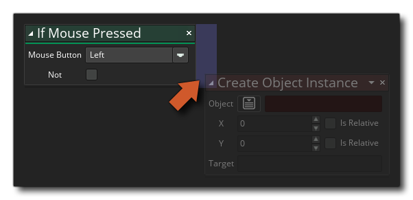

Avec cette action, vous pouvez interroger la souris pour voir si un bouton est en cours d'appui. L'action retournera true chaque étape que le bouton de la souris est enfoncé (et maintenu) vers le bas, ou false sinon, si vous cliquez sur le not modifier vous pouvez alors vérifier si le bouton de la souris n'est pas pressé, c'est-à-dire: l'action retournera true alors qu'aucun bouton n'est pressé et false s'il y a. Si vous n'avez besoin de vérifier qu'une seule pression sur la souris, utilisez l'action si mouse_down.
Notez que pour ajouter des actions dans le bloc "if", elles doivent être placées sur le côté de l'action, comme indiqué dans l'image ci-dessous: 
Ces actions seront maintenant exécutées si le "si" évalue à true, tandis que toutes les actions abandonnées ailleurs seront effectuées après le bloc "if".
Argument La description Mouse Button Le nom du bouton de la souris à vérifier (gauche, milieu, droite). Not Annulez le contrôle (true devient false et vice versa)
Le code de bloc d'action ci-dessus interroge l'état du bouton de la souris à chaque pas et s'il est maintenu enfoncé, il vérifie la pression initiale de la souris. Si la vérification est activée lors de la première pression vers le bas, un son est émis, puis lorsque le bouton est enfoncé, la fusion des images-objets passe au rouge. Si la souris n'est pas maintenue enfoncée, une vérification est effectuée sur la version de la souris pour réinitialiser la couleur de fusion au blanc.